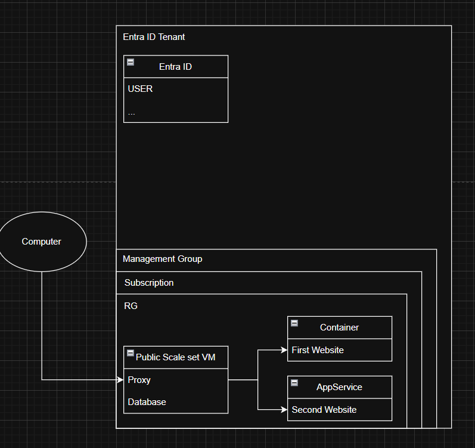

Azure AZ-104 — Identity, Governance & Compute Completed
Hands-on Team Deployment — VM Scale Set, Web Container & App Service
AZ-104 / Pluralsight
Project Overview
About the Project
A hands-on Azure team project built to prove that we understood and could practically apply two AZ-104 Pluralsight courses: Manage Azure Identities and Governance and Deploy and Manage Azure Compute Resources. Rather than just following the courses, the team designed and deployed a small but realistic cloud environment — an Entra ID tenant with users, a proper management group / subscription / resource group hierarchy, and a set of compute resources (a VM Scale Set, a web container, and an App Service) wired together with a public-facing proxy and private back-end services.
Goal
Demonstrate that we not only completed the two Pluralsight courses but can actually utilize the concepts — building identity and governance structures and deploying and managing Azure compute resources in a real shared environment.
Team
Würth Eric, Simon Max, Jervis Yona — working in the same subscription and the same resource group.
Architecture
The diagram below shows the deployed environment: an Entra ID tenant for identity, the Management Group → Subscription → Resource Group governance hierarchy, and the compute resources inside the resource group. A client on the internet reaches only the public-facing VM Scale Set, whose proxy forwards traffic to the website running on the web container. The container and the App Service hold private IPs only and are never exposed directly.

Topics Covered
Manage Azure Identities and Governance
Applying the first Pluralsight course in practice:
• Entra ID Tenant — created the directory and managed users that secure access to the environment.
• Governance hierarchy — organised resources under a Management Group → Subscription → Resource Group structure so the whole team works within a single, well-scoped resource group.
• Shared subscription — all three members operated in the same subscription and resource group, coordinating access and naming.
Deploy and Manage Azure Compute Resources
Applying the second Pluralsight course in practice:
• VM Scale Set — a public-facing scale set acting as the single internet entry point into the environment.
• Web Container — a containerised website running behind the scale set, reachable only on a private IP.
• App Service — a second, privately-hosted website serving additional content.
• Network segmentation — only the scale set holds a public IP; the container and App Service are private-only, so they cannot be reached directly from the internet.
Technical Stack
Microsoft Azure
The whole environment runs on Azure: Entra ID for identity, a Management Group / Subscription / Resource Group hierarchy for governance, plus Virtual Machine Scale Sets, Container Instances, App Service, Virtual Networks and Public IP addresses for the compute layer.
VM Scale Set & Proxy
A Virtual Machine Scale Set is the only public-facing resource. It runs a proxy that forwards incoming HTTP traffic over the private network to the website hosted on the web container, keeping the back-end isolated from the internet.
Web Container & App Service
A containerised website runs behind the scale set, while a separate App Service hosts a second website. Both carry private IPs only and are reached through the network rather than directly from the internet.
My Part in the Project
Within the three-person team I owned the public entry point and the web-container side of the compute layer.
• Deployed and configured the web container running the website.
• Set up the VM Scale Set as the single public-facing resource of the environment.
• Built the proxy on the scale set that forwards traffic to the website on the web container.
• Ensured only the scale set is reachable over a public IP, while the container and App Service stay private-only.
Course References
The two Pluralsight courses this project demonstrates understanding of: